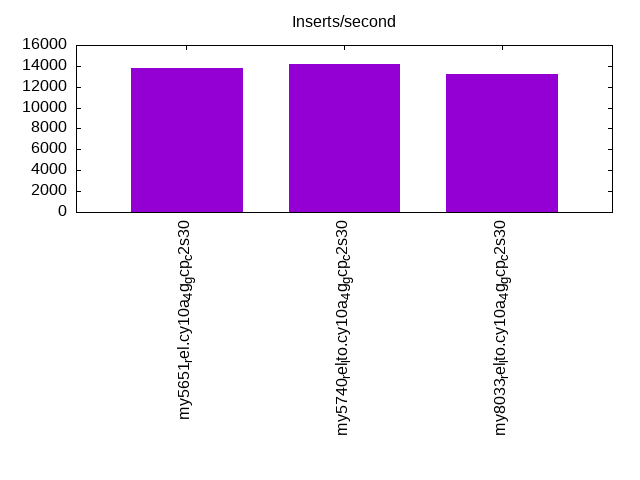

This is a report for the insert benchmark with 160M docs and 8 client(s). It is generated by scripts (bash, awk, sed) and Tufte might not be impressed. An overview of the insert benchmark is here and a short update is here. Below, by DBMS, I mean DBMS+version.config. An example is my8020.c10b40 where my means MySQL, 8020 is version 8.0.20 and c10b40 is the name for the configuration file.
The test server is a c2-standard-30 from GCP with 15 cores, hyperthreads disabled, 120G RAM, XFS + SW RAID 0 on 4 NVMe devices (1.5TB). The benchmark was run with 8 client and there were 1 or 3 connections per client (1 for queries or inserts without rate limits, 1+1 for rate limited inserts+deletes). There are 8 tables, client per table. It loads 160M rows without secondary indexes, creates secondary indexes, then inserts 800M rows with a delete per insert to avoid growing the table. It then does 3 read+write tests for 1800s each that do queries as fast as possible with 100, 500 and then 1000 inserts/second/client concurrent with the queries and 1000 deletes/second to avoid growing the table. The database is cached by the OS but not by InnoDB.
The tested DBMS are:
The numbers are inserts/s for l.i0 and l.i1, indexed docs (or rows) /s for l.x and queries/s for q*.2. The values are the average rate over the entire test for inserts (IPS) and queries (QPS). The range of values for IPS and QPS is split into 3 parts: bottom 25%, middle 50%, top 25%. Values in the bottom 25% have a red background, values in the top 25% have a green background and values in the middle have no color. A gray background is used for values that can be ignored because the DBMS did not sustain the target insert rate. Red backgrounds are not used when the minimum value is within 80% of the max value.
| dbms | l.i0 | l.x | l.i1 | q100.1 | q500.1 | q1000.1 |
|---|---|---|---|---|---|---|
| my5651_rel.cy10a_4g_gcp_c2s30 | 418848 | 611069 | 13772 | 2832 | 1843 | 1110 |
| my5740_rel_lto.cy10a_4g_gcp_c2s30 | 733945 | 1143571 | 14164 | 3257 | 2440 | 1275 |
| my8033_rel_lto.cy10a_4g_gcp_c2s30 | 669456 | 899438 | 13210 | 3611 | 1923 | 1114 |
This table has relative throughput, throughput for the DBMS relative to the DBMS in the first line, using the absolute throughput from the previous table. Values less than 0.95 have a yellow background. Values greater than 1.05 have a blue background.
| dbms | l.i0 | l.x | l.i1 | q100.1 | q500.1 | q1000.1 |
|---|---|---|---|---|---|---|
| my5651_rel.cy10a_4g_gcp_c2s30 | 1.00 | 1.00 | 1.00 | 1.00 | 1.00 | 1.00 |
| my5740_rel_lto.cy10a_4g_gcp_c2s30 | 1.75 | 1.87 | 1.03 | 1.15 | 1.32 | 1.15 |
| my8033_rel_lto.cy10a_4g_gcp_c2s30 | 1.60 | 1.47 | 0.96 | 1.28 | 1.04 | 1.00 |
This lists the average rate of inserts/s for the tests that do inserts concurrent with queries. For such tests the query rate is listed in the table above. The read+write tests are setup so that the insert rate should match the target rate every second. Cells that are not at least 95% of the target have a red background to indicate a failure to satisfy the target.
| dbms | q100.1 | q500.1 | q1000.1 |
|---|---|---|---|
| my5651_rel.cy10a_4g_gcp_c2s30 | 786 | 3945 | 7873 |
| my5740_rel_lto.cy10a_4g_gcp_c2s30 | 786 | 3947 | 7882 |
| my8033_rel_lto.cy10a_4g_gcp_c2s30 | 792 | 3958 | 7912 |
| target | 800 | 4000 | 8000 |
l.i0: load without secondary indexes. Graphs for performance per 1-second interval are here.
Average throughput:
Insert response time histogram: each cell has the percentage of responses that take <= the time in the header and max is the max response time in seconds. For the max column values in the top 25% of the range have a red background and in the bottom 25% of the range have a green background. The red background is not used when the min value is within 80% of the max value.
| dbms | 256us | 1ms | 4ms | 16ms | 64ms | 256ms | 1s | 4s | 16s | gt | max |
|---|---|---|---|---|---|---|---|---|---|---|---|
| my5651_rel.cy10a_4g_gcp_c2s30 | 2.848 | 96.727 | 0.245 | 0.166 | 0.014 | 0.198 | |||||
| my5740_rel_lto.cy10a_4g_gcp_c2s30 | 87.532 | 12.210 | 0.219 | 0.025 | 0.014 | 0.001 | 0.267 | ||||
| my8033_rel_lto.cy10a_4g_gcp_c2s30 | 16.435 | 83.325 | 0.199 | 0.026 | 0.014 | 0.221 |
Performance metrics for the DBMS listed above. Some are normalized by throughput, others are not. Legend for results is here.
ips qps rps rmbps wps wmbps rpq rkbpq wpi wkbpi csps cpups cspq cpupq dbgb1 dbgb2 rss maxop p50 p99 tag 418848 0 3281 12.8 350.9 101.5 0.008 0.031 0.001 0.248 88485 42.4 0.211 15 10.6 139.1 4.3 0.198 53842 43168 160m.my5651_rel.cy10a_4g_gcp_c2s30 733945 0 0 0.0 711.4 178.2 0.000 0.000 0.001 0.249 76140 66.4 0.104 14 10.6 139.1 4.5 0.267 100790 76617 160m.my5740_rel_lto.cy10a_4g_gcp_c2s30 669456 0 0 0.0 1170.7 168.8 0.000 0.000 0.002 0.258 182889 73.2 0.273 16 10.6 139.1 4.7 0.221 90401 70624 160m.my8033_rel_lto.cy10a_4g_gcp_c2s30
l.x: create secondary indexes.
Average throughput:
Performance metrics for the DBMS listed above. Some are normalized by throughput, others are not. Legend for results is here.
ips qps rps rmbps wps wmbps rpq rkbpq wpi wkbpi csps cpups cspq cpupq dbgb1 dbgb2 rss maxop p50 p99 tag 611069 0 275 1.1 3193.3 574.8 0.000 0.002 0.005 0.963 27388 39.8 0.045 10 21.7 150.2 4.3 0.002 NA NA 160m.my5651_rel.cy10a_4g_gcp_c2s30 1143571 0 0 0.0 3637.2 909.1 0.000 0.000 0.003 0.814 40469 32.6 0.035 4 23.6 152.1 4.7 0.031 NA NA 160m.my5740_rel_lto.cy10a_4g_gcp_c2s30 899438 0 4570 290.8 16317.1 897.1 0.005 0.331 0.018 1.021 102403 68.6 0.114 11 23.5 152.1 4.7 0.008 NA NA 160m.my8033_rel_lto.cy10a_4g_gcp_c2s30
l.i1: continue load after secondary indexes created. Graphs for performance per 1-second interval are here.
Average throughput:
Insert response time histogram: each cell has the percentage of responses that take <= the time in the header and max is the max response time in seconds. For the max column values in the top 25% of the range have a red background and in the bottom 25% of the range have a green background. The red background is not used when the min value is within 80% of the max value.
| dbms | 256us | 1ms | 4ms | 16ms | 64ms | 256ms | 1s | 4s | 16s | gt | max |
|---|---|---|---|---|---|---|---|---|---|---|---|
| my5651_rel.cy10a_4g_gcp_c2s30 | 0.715 | 26.446 | 67.845 | 4.735 | 0.258 | 0.851 | |||||
| my5740_rel_lto.cy10a_4g_gcp_c2s30 | 2.714 | 39.310 | 50.005 | 7.671 | 0.296 | 0.004 | 0.001 | 5.155 | |||
| my8033_rel_lto.cy10a_4g_gcp_c2s30 | 0.392 | 26.000 | 67.618 | 5.665 | 0.324 | 0.604 |
Delete response time histogram: each cell has the percentage of responses that take <= the time in the header and max is the max response time in seconds. For the max column values in the top 25% of the range have a red background and in the bottom 25% of the range have a green background. The red background is not used when the min value is within 80% of the max value.
| dbms | 256us | 1ms | 4ms | 16ms | 64ms | 256ms | 1s | 4s | 16s | gt | max |
|---|---|---|---|---|---|---|---|---|---|---|---|
| my5651_rel.cy10a_4g_gcp_c2s30 | 0.001 | 1.111 | 29.398 | 65.795 | 3.670 | 0.026 | 0.497 | ||||
| my5740_rel_lto.cy10a_4g_gcp_c2s30 | 0.001 | 4.039 | 42.156 | 47.777 | 5.976 | 0.051 | 0.001 | 2.380 | |||
| my8033_rel_lto.cy10a_4g_gcp_c2s30 | 1.351 | 29.736 | 65.027 | 3.806 | 0.080 | 0.602 |
Performance metrics for the DBMS listed above. Some are normalized by throughput, others are not. Legend for results is here.
ips qps rps rmbps wps wmbps rpq rkbpq wpi wkbpi csps cpups cspq cpupq dbgb1 dbgb2 rss maxop p50 p99 tag 13772 0 462 2.3 14350.1 436.5 0.034 0.173 1.042 32.453 145274 32.9 10.549 358 40.9 175.5 4.3 0.851 1798 200 160m.my5651_rel.cy10a_4g_gcp_c2s30 14164 0 2 0.6 14620.9 449.0 0.000 0.040 1.032 32.462 134009 35.3 9.461 374 41.0 175.8 4.7 5.155 1799 150 160m.my5740_rel_lto.cy10a_4g_gcp_c2s30 13210 0 2 0.6 16018.5 407.2 0.000 0.047 1.213 31.569 247329 45.5 18.723 517 40.9 176.1 4.8 0.604 1648 200 160m.my8033_rel_lto.cy10a_4g_gcp_c2s30
q100.1: range queries with 100 insert/s per client. Graphs for performance per 1-second interval are here.
Average throughput:
Query response time histogram: each cell has the percentage of responses that take <= the time in the header and max is the max response time in seconds. For max values in the top 25% of the range have a red background and in the bottom 25% of the range have a green background. The red background is not used when the min value is within 80% of the max value.
| dbms | 256us | 1ms | 4ms | 16ms | 64ms | 256ms | 1s | 4s | 16s | gt | max |
|---|---|---|---|---|---|---|---|---|---|---|---|
| my5651_rel.cy10a_4g_gcp_c2s30 | 26.726 | 23.994 | 27.672 | 19.126 | 2.481 | 0.001 | nonzero | 0.317 | |||
| my5740_rel_lto.cy10a_4g_gcp_c2s30 | 39.352 | 27.653 | 12.333 | 18.035 | 2.622 | 0.005 | nonzero | 0.277 | |||
| my8033_rel_lto.cy10a_4g_gcp_c2s30 | 31.176 | 28.790 | 20.397 | 19.135 | 0.495 | 0.007 | nonzero | 0.336 |
Insert response time histogram: each cell has the percentage of responses that take <= the time in the header and max is the max response time in seconds. For max values in the top 25% of the range have a red background and in the bottom 25% of the range have a green background. The red background is not used when the min value is within 80% of the max value.
| dbms | 256us | 1ms | 4ms | 16ms | 64ms | 256ms | 1s | 4s | 16s | gt | max |
|---|---|---|---|---|---|---|---|---|---|---|---|
| my5651_rel.cy10a_4g_gcp_c2s30 | 39.111 | 56.149 | 4.701 | 0.038 | 0.208 | ||||||
| my5740_rel_lto.cy10a_4g_gcp_c2s30 | 29.906 | 52.667 | 17.378 | 0.049 | 0.139 | ||||||
| my8033_rel_lto.cy10a_4g_gcp_c2s30 | 25.420 | 59.705 | 14.354 | 0.479 | 0.042 | 0.512 |
Delete response time histogram: each cell has the percentage of responses that take <= the time in the header and max is the max response time in seconds. For max values in the top 25% of the range have a red background and in the bottom 25% of the range have a green background. The red background is not used when the min value is within 80% of the max value.
| dbms | 256us | 1ms | 4ms | 16ms | 64ms | 256ms | 1s | 4s | 16s | gt | max |
|---|---|---|---|---|---|---|---|---|---|---|---|
| my5651_rel.cy10a_4g_gcp_c2s30 | 39.083 | 56.413 | 4.479 | 0.024 | 0.139 | ||||||
| my5740_rel_lto.cy10a_4g_gcp_c2s30 | 31.344 | 52.212 | 16.399 | 0.045 | 0.186 | ||||||
| my8033_rel_lto.cy10a_4g_gcp_c2s30 | 27.920 | 58.257 | 13.323 | 0.469 | 0.031 | 0.503 |
Performance metrics for the DBMS listed above. Some are normalized by throughput, others are not. Legend for results is here.
ips qps rps rmbps wps wmbps rpq rkbpq wpi wkbpi csps cpups cspq cpupq dbgb1 dbgb2 rss maxop p50 p99 tag 786 2832 34 0.3 14064.3 313.1 0.012 0.116 17.893 407.896 137276 22.3 48.473 1181 40.9 175.5 4.3 0.317 368 176 160m.my5651_rel.cy10a_4g_gcp_c2s30 786 3257 9 0.3 17696.8 421.7 0.003 0.101 22.504 549.108 116510 15.4 35.771 709 41.0 175.8 4.6 0.277 432 96 160m.my5740_rel_lto.cy10a_4g_gcp_c2s30 792 3611 10 0.6 17863.1 355.7 0.003 0.171 22.554 459.842 289302 20.3 80.121 843 40.9 176.1 4.8 0.336 463 144 160m.my8033_rel_lto.cy10a_4g_gcp_c2s30
q500.1: range queries with 500 insert/s per client. Graphs for performance per 1-second interval are here.
Average throughput:
Query response time histogram: each cell has the percentage of responses that take <= the time in the header and max is the max response time in seconds. For max values in the top 25% of the range have a red background and in the bottom 25% of the range have a green background. The red background is not used when the min value is within 80% of the max value.
| dbms | 256us | 1ms | 4ms | 16ms | 64ms | 256ms | 1s | 4s | 16s | gt | max |
|---|---|---|---|---|---|---|---|---|---|---|---|
| my5651_rel.cy10a_4g_gcp_c2s30 | 24.294 | 22.500 | 20.278 | 26.500 | 6.416 | 0.012 | 0.230 | ||||
| my5740_rel_lto.cy10a_4g_gcp_c2s30 | 27.612 | 30.580 | 14.390 | 23.324 | 4.076 | 0.017 | 0.143 | ||||
| my8033_rel_lto.cy10a_4g_gcp_c2s30 | 20.320 | 21.998 | 21.545 | 32.460 | 3.650 | 0.027 | nonzero | 0.269 |
Insert response time histogram: each cell has the percentage of responses that take <= the time in the header and max is the max response time in seconds. For max values in the top 25% of the range have a red background and in the bottom 25% of the range have a green background. The red background is not used when the min value is within 80% of the max value.
| dbms | 256us | 1ms | 4ms | 16ms | 64ms | 256ms | 1s | 4s | 16s | gt | max |
|---|---|---|---|---|---|---|---|---|---|---|---|
| my5651_rel.cy10a_4g_gcp_c2s30 | 41.391 | 51.173 | 7.435 | 0.001 | 0.069 | ||||||
| my5740_rel_lto.cy10a_4g_gcp_c2s30 | 26.009 | 54.800 | 19.129 | 0.062 | 0.140 | ||||||
| my8033_rel_lto.cy10a_4g_gcp_c2s30 | 18.766 | 60.810 | 19.310 | 1.113 | 0.002 | 0.313 |
Delete response time histogram: each cell has the percentage of responses that take <= the time in the header and max is the max response time in seconds. For max values in the top 25% of the range have a red background and in the bottom 25% of the range have a green background. The red background is not used when the min value is within 80% of the max value.
| dbms | 256us | 1ms | 4ms | 16ms | 64ms | 256ms | 1s | 4s | 16s | gt | max |
|---|---|---|---|---|---|---|---|---|---|---|---|
| my5651_rel.cy10a_4g_gcp_c2s30 | 41.169 | 51.357 | 7.474 | 0.062 | |||||||
| my5740_rel_lto.cy10a_4g_gcp_c2s30 | 27.228 | 54.202 | 18.522 | 0.047 | 0.139 | ||||||
| my8033_rel_lto.cy10a_4g_gcp_c2s30 | 21.268 | 59.024 | 18.654 | 1.053 | 0.249 |
Performance metrics for the DBMS listed above. Some are normalized by throughput, others are not. Legend for results is here.
ips qps rps rmbps wps wmbps rpq rkbpq wpi wkbpi csps cpups cspq cpupq dbgb1 dbgb2 rss maxop p50 p99 tag 3945 1843 152 1.0 15443.0 354.0 0.082 0.575 3.914 91.876 130537 16.4 70.832 1335 40.9 175.5 4.3 0.230 224 176 160m.my5651_rel.cy10a_4g_gcp_c2s30 3947 2440 55 1.2 17272.1 427.1 0.022 0.487 4.376 110.807 116510 17.5 47.760 1076 41.0 175.8 4.6 0.143 304 256 160m.my5740_rel_lto.cy10a_4g_gcp_c2s30 3958 1923 36 0.8 16941.2 352.0 0.019 0.414 4.280 91.068 291054 21.2 151.346 1654 40.9 176.4 4.8 0.269 240 192 160m.my8033_rel_lto.cy10a_4g_gcp_c2s30
q1000.1: range queries with 1000 insert/s per client. Graphs for performance per 1-second interval are here.
Average throughput:
Query response time histogram: each cell has the percentage of responses that take <= the time in the header and max is the max response time in seconds. For max values in the top 25% of the range have a red background and in the bottom 25% of the range have a green background. The red background is not used when the min value is within 80% of the max value.
| dbms | 256us | 1ms | 4ms | 16ms | 64ms | 256ms | 1s | 4s | 16s | gt | max |
|---|---|---|---|---|---|---|---|---|---|---|---|
| my5651_rel.cy10a_4g_gcp_c2s30 | 14.748 | 19.630 | 18.151 | 32.812 | 14.562 | 0.097 | nonzero | 0.298 | |||
| my5740_rel_lto.cy10a_4g_gcp_c2s30 | 14.646 | 27.691 | 17.890 | 28.298 | 11.128 | 0.344 | 0.002 | 0.488 | |||
| my8033_rel_lto.cy10a_4g_gcp_c2s30 | 8.938 | 15.295 | 25.136 | 39.753 | 10.428 | 0.445 | 0.005 | 0.522 |
Insert response time histogram: each cell has the percentage of responses that take <= the time in the header and max is the max response time in seconds. For max values in the top 25% of the range have a red background and in the bottom 25% of the range have a green background. The red background is not used when the min value is within 80% of the max value.
| dbms | 256us | 1ms | 4ms | 16ms | 64ms | 256ms | 1s | 4s | 16s | gt | max |
|---|---|---|---|---|---|---|---|---|---|---|---|
| my5651_rel.cy10a_4g_gcp_c2s30 | 15.686 | 46.825 | 36.940 | 0.540 | 0.009 | 0.523 | |||||
| my5740_rel_lto.cy10a_4g_gcp_c2s30 | 9.113 | 37.388 | 49.982 | 3.453 | 0.064 | 0.551 | |||||
| my8033_rel_lto.cy10a_4g_gcp_c2s30 | 5.766 | 48.223 | 40.678 | 5.205 | 0.128 | 0.743 |
Delete response time histogram: each cell has the percentage of responses that take <= the time in the header and max is the max response time in seconds. For max values in the top 25% of the range have a red background and in the bottom 25% of the range have a green background. The red background is not used when the min value is within 80% of the max value.
| dbms | 256us | 1ms | 4ms | 16ms | 64ms | 256ms | 1s | 4s | 16s | gt | max |
|---|---|---|---|---|---|---|---|---|---|---|---|
| my5651_rel.cy10a_4g_gcp_c2s30 | 15.889 | 47.038 | 36.635 | 0.431 | 0.007 | 0.480 | |||||
| my5740_rel_lto.cy10a_4g_gcp_c2s30 | 9.784 | 38.263 | 49.109 | 2.807 | 0.037 | 0.763 | |||||
| my8033_rel_lto.cy10a_4g_gcp_c2s30 | 7.074 | 48.561 | 39.712 | 4.575 | 0.077 | 0.570 |
Performance metrics for the DBMS listed above. Some are normalized by throughput, others are not. Legend for results is here.
ips qps rps rmbps wps wmbps rpq rkbpq wpi wkbpi csps cpups cspq cpupq dbgb1 dbgb2 rss maxop p50 p99 tag 7873 1110 316 2.0 15942.5 402.2 0.285 1.843 2.025 52.305 129423 21.7 116.587 2932 41.4 176.6 4.3 0.298 144 64 160m.my5651_rel.cy10a_4g_gcp_c2s30 7882 1275 77 1.5 16619.1 437.2 0.060 1.227 2.109 56.806 129851 24.2 101.812 2846 41.3 176.4 4.6 0.488 160 96 160m.my5740_rel_lto.cy10a_4g_gcp_c2s30 7912 1114 71 1.4 20160.9 430.7 0.064 1.259 2.548 55.741 291820 32.4 262.075 4365 41.5 178.0 4.8 0.522 128 64 160m.my8033_rel_lto.cy10a_4g_gcp_c2s30
l.i0: load without secondary indexes
Performance metrics for all DBMS, not just the ones listed above. Some are normalized by throughput, others are not. Legend for results is here.
ips qps rps rmbps wps wmbps rpq rkbpq wpi wkbpi csps cpups cspq cpupq dbgb1 dbgb2 rss maxop p50 p99 tag 418848 0 3281 12.8 350.9 101.5 0.008 0.031 0.001 0.248 88485 42.4 0.211 15 10.6 139.1 4.3 0.198 53842 43168 160m.my5651_rel.cy10a_4g_gcp_c2s30 733945 0 0 0.0 711.4 178.2 0.000 0.000 0.001 0.249 76140 66.4 0.104 14 10.6 139.1 4.5 0.267 100790 76617 160m.my5740_rel_lto.cy10a_4g_gcp_c2s30 669456 0 0 0.0 1170.7 168.8 0.000 0.000 0.002 0.258 182889 73.2 0.273 16 10.6 139.1 4.7 0.221 90401 70624 160m.my8033_rel_lto.cy10a_4g_gcp_c2s30
l.x: create secondary indexes
Performance metrics for all DBMS, not just the ones listed above. Some are normalized by throughput, others are not. Legend for results is here.
ips qps rps rmbps wps wmbps rpq rkbpq wpi wkbpi csps cpups cspq cpupq dbgb1 dbgb2 rss maxop p50 p99 tag 611069 0 275 1.1 3193.3 574.8 0.000 0.002 0.005 0.963 27388 39.8 0.045 10 21.7 150.2 4.3 0.002 NA NA 160m.my5651_rel.cy10a_4g_gcp_c2s30 1143571 0 0 0.0 3637.2 909.1 0.000 0.000 0.003 0.814 40469 32.6 0.035 4 23.6 152.1 4.7 0.031 NA NA 160m.my5740_rel_lto.cy10a_4g_gcp_c2s30 899438 0 4570 290.8 16317.1 897.1 0.005 0.331 0.018 1.021 102403 68.6 0.114 11 23.5 152.1 4.7 0.008 NA NA 160m.my8033_rel_lto.cy10a_4g_gcp_c2s30
l.i1: continue load after secondary indexes created
Performance metrics for all DBMS, not just the ones listed above. Some are normalized by throughput, others are not. Legend for results is here.
ips qps rps rmbps wps wmbps rpq rkbpq wpi wkbpi csps cpups cspq cpupq dbgb1 dbgb2 rss maxop p50 p99 tag 13772 0 462 2.3 14350.1 436.5 0.034 0.173 1.042 32.453 145274 32.9 10.549 358 40.9 175.5 4.3 0.851 1798 200 160m.my5651_rel.cy10a_4g_gcp_c2s30 14164 0 2 0.6 14620.9 449.0 0.000 0.040 1.032 32.462 134009 35.3 9.461 374 41.0 175.8 4.7 5.155 1799 150 160m.my5740_rel_lto.cy10a_4g_gcp_c2s30 13210 0 2 0.6 16018.5 407.2 0.000 0.047 1.213 31.569 247329 45.5 18.723 517 40.9 176.1 4.8 0.604 1648 200 160m.my8033_rel_lto.cy10a_4g_gcp_c2s30
q100.1: range queries with 100 insert/s per client
Performance metrics for all DBMS, not just the ones listed above. Some are normalized by throughput, others are not. Legend for results is here.
ips qps rps rmbps wps wmbps rpq rkbpq wpi wkbpi csps cpups cspq cpupq dbgb1 dbgb2 rss maxop p50 p99 tag 786 2832 34 0.3 14064.3 313.1 0.012 0.116 17.893 407.896 137276 22.3 48.473 1181 40.9 175.5 4.3 0.317 368 176 160m.my5651_rel.cy10a_4g_gcp_c2s30 786 3257 9 0.3 17696.8 421.7 0.003 0.101 22.504 549.108 116510 15.4 35.771 709 41.0 175.8 4.6 0.277 432 96 160m.my5740_rel_lto.cy10a_4g_gcp_c2s30 792 3611 10 0.6 17863.1 355.7 0.003 0.171 22.554 459.842 289302 20.3 80.121 843 40.9 176.1 4.8 0.336 463 144 160m.my8033_rel_lto.cy10a_4g_gcp_c2s30
q500.1: range queries with 500 insert/s per client
Performance metrics for all DBMS, not just the ones listed above. Some are normalized by throughput, others are not. Legend for results is here.
ips qps rps rmbps wps wmbps rpq rkbpq wpi wkbpi csps cpups cspq cpupq dbgb1 dbgb2 rss maxop p50 p99 tag 3945 1843 152 1.0 15443.0 354.0 0.082 0.575 3.914 91.876 130537 16.4 70.832 1335 40.9 175.5 4.3 0.230 224 176 160m.my5651_rel.cy10a_4g_gcp_c2s30 3947 2440 55 1.2 17272.1 427.1 0.022 0.487 4.376 110.807 116510 17.5 47.760 1076 41.0 175.8 4.6 0.143 304 256 160m.my5740_rel_lto.cy10a_4g_gcp_c2s30 3958 1923 36 0.8 16941.2 352.0 0.019 0.414 4.280 91.068 291054 21.2 151.346 1654 40.9 176.4 4.8 0.269 240 192 160m.my8033_rel_lto.cy10a_4g_gcp_c2s30
q1000.1: range queries with 1000 insert/s per client
Performance metrics for all DBMS, not just the ones listed above. Some are normalized by throughput, others are not. Legend for results is here.
ips qps rps rmbps wps wmbps rpq rkbpq wpi wkbpi csps cpups cspq cpupq dbgb1 dbgb2 rss maxop p50 p99 tag 7873 1110 316 2.0 15942.5 402.2 0.285 1.843 2.025 52.305 129423 21.7 116.587 2932 41.4 176.6 4.3 0.298 144 64 160m.my5651_rel.cy10a_4g_gcp_c2s30 7882 1275 77 1.5 16619.1 437.2 0.060 1.227 2.109 56.806 129851 24.2 101.812 2846 41.3 176.4 4.6 0.488 160 96 160m.my5740_rel_lto.cy10a_4g_gcp_c2s30 7912 1114 71 1.4 20160.9 430.7 0.064 1.259 2.548 55.741 291820 32.4 262.075 4365 41.5 178.0 4.8 0.522 128 64 160m.my8033_rel_lto.cy10a_4g_gcp_c2s30
Insert response time histogram
256us 1ms 4ms 16ms 64ms 256ms 1s 4s 16s gt max tag 0.000 2.848 96.727 0.245 0.166 0.014 0.000 0.000 0.000 0.000 0.198 my5651_rel.cy10a_4g_gcp_c2s30 0.000 87.532 12.210 0.219 0.025 0.014 0.001 0.000 0.000 0.000 0.267 my5740_rel_lto.cy10a_4g_gcp_c2s30 0.000 16.435 83.325 0.199 0.026 0.014 0.000 0.000 0.000 0.000 0.221 my8033_rel_lto.cy10a_4g_gcp_c2s30
TODO - determine whether there is data for create index response time
Insert response time histogram
256us 1ms 4ms 16ms 64ms 256ms 1s 4s 16s gt max tag 0.000 0.000 0.715 26.446 67.845 4.735 0.258 0.000 0.000 0.000 0.851 my5651_rel.cy10a_4g_gcp_c2s30 0.000 0.000 2.714 39.310 50.005 7.671 0.296 0.004 0.001 0.000 5.155 my5740_rel_lto.cy10a_4g_gcp_c2s30 0.000 0.000 0.392 26.000 67.618 5.665 0.324 0.000 0.000 0.000 0.604 my8033_rel_lto.cy10a_4g_gcp_c2s30
Delete response time histogram
256us 1ms 4ms 16ms 64ms 256ms 1s 4s 16s gt max tag 0.000 0.001 1.111 29.398 65.795 3.670 0.026 0.000 0.000 0.000 0.497 my5651_rel.cy10a_4g_gcp_c2s30 0.000 0.001 4.039 42.156 47.777 5.976 0.051 0.001 0.000 0.000 2.380 my5740_rel_lto.cy10a_4g_gcp_c2s30 0.000 0.000 1.351 29.736 65.027 3.806 0.080 0.000 0.000 0.000 0.602 my8033_rel_lto.cy10a_4g_gcp_c2s30
Query response time histogram
256us 1ms 4ms 16ms 64ms 256ms 1s 4s 16s gt max tag 26.726 23.994 27.672 19.126 2.481 0.001 nonzero 0.000 0.000 0.000 0.317 my5651_rel.cy10a_4g_gcp_c2s30 39.352 27.653 12.333 18.035 2.622 0.005 nonzero 0.000 0.000 0.000 0.277 my5740_rel_lto.cy10a_4g_gcp_c2s30 31.176 28.790 20.397 19.135 0.495 0.007 nonzero 0.000 0.000 0.000 0.336 my8033_rel_lto.cy10a_4g_gcp_c2s30
Insert response time histogram
256us 1ms 4ms 16ms 64ms 256ms 1s 4s 16s gt max tag 0.000 0.000 39.111 56.149 4.701 0.038 0.000 0.000 0.000 0.000 0.208 my5651_rel.cy10a_4g_gcp_c2s30 0.000 0.000 29.906 52.667 17.378 0.049 0.000 0.000 0.000 0.000 0.139 my5740_rel_lto.cy10a_4g_gcp_c2s30 0.000 0.000 25.420 59.705 14.354 0.479 0.042 0.000 0.000 0.000 0.512 my8033_rel_lto.cy10a_4g_gcp_c2s30
Delete response time histogram
256us 1ms 4ms 16ms 64ms 256ms 1s 4s 16s gt max tag 0.000 0.000 39.083 56.413 4.479 0.024 0.000 0.000 0.000 0.000 0.139 my5651_rel.cy10a_4g_gcp_c2s30 0.000 0.000 31.344 52.212 16.399 0.045 0.000 0.000 0.000 0.000 0.186 my5740_rel_lto.cy10a_4g_gcp_c2s30 0.000 0.000 27.920 58.257 13.323 0.469 0.031 0.000 0.000 0.000 0.503 my8033_rel_lto.cy10a_4g_gcp_c2s30
Query response time histogram
256us 1ms 4ms 16ms 64ms 256ms 1s 4s 16s gt max tag 24.294 22.500 20.278 26.500 6.416 0.012 0.000 0.000 0.000 0.000 0.230 my5651_rel.cy10a_4g_gcp_c2s30 27.612 30.580 14.390 23.324 4.076 0.017 0.000 0.000 0.000 0.000 0.143 my5740_rel_lto.cy10a_4g_gcp_c2s30 20.320 21.998 21.545 32.460 3.650 0.027 nonzero 0.000 0.000 0.000 0.269 my8033_rel_lto.cy10a_4g_gcp_c2s30
Insert response time histogram
256us 1ms 4ms 16ms 64ms 256ms 1s 4s 16s gt max tag 0.000 0.000 41.391 51.173 7.435 0.001 0.000 0.000 0.000 0.000 0.069 my5651_rel.cy10a_4g_gcp_c2s30 0.000 0.000 26.009 54.800 19.129 0.062 0.000 0.000 0.000 0.000 0.140 my5740_rel_lto.cy10a_4g_gcp_c2s30 0.000 0.000 18.766 60.810 19.310 1.113 0.002 0.000 0.000 0.000 0.313 my8033_rel_lto.cy10a_4g_gcp_c2s30
Delete response time histogram
256us 1ms 4ms 16ms 64ms 256ms 1s 4s 16s gt max tag 0.000 0.000 41.169 51.357 7.474 0.000 0.000 0.000 0.000 0.000 0.062 my5651_rel.cy10a_4g_gcp_c2s30 0.000 0.000 27.228 54.202 18.522 0.047 0.000 0.000 0.000 0.000 0.139 my5740_rel_lto.cy10a_4g_gcp_c2s30 0.000 0.000 21.268 59.024 18.654 1.053 0.000 0.000 0.000 0.000 0.249 my8033_rel_lto.cy10a_4g_gcp_c2s30
Query response time histogram
256us 1ms 4ms 16ms 64ms 256ms 1s 4s 16s gt max tag 14.748 19.630 18.151 32.812 14.562 0.097 nonzero 0.000 0.000 0.000 0.298 my5651_rel.cy10a_4g_gcp_c2s30 14.646 27.691 17.890 28.298 11.128 0.344 0.002 0.000 0.000 0.000 0.488 my5740_rel_lto.cy10a_4g_gcp_c2s30 8.938 15.295 25.136 39.753 10.428 0.445 0.005 0.000 0.000 0.000 0.522 my8033_rel_lto.cy10a_4g_gcp_c2s30
Insert response time histogram
256us 1ms 4ms 16ms 64ms 256ms 1s 4s 16s gt max tag 0.000 0.000 15.686 46.825 36.940 0.540 0.009 0.000 0.000 0.000 0.523 my5651_rel.cy10a_4g_gcp_c2s30 0.000 0.000 9.113 37.388 49.982 3.453 0.064 0.000 0.000 0.000 0.551 my5740_rel_lto.cy10a_4g_gcp_c2s30 0.000 0.000 5.766 48.223 40.678 5.205 0.128 0.000 0.000 0.000 0.743 my8033_rel_lto.cy10a_4g_gcp_c2s30
Delete response time histogram
256us 1ms 4ms 16ms 64ms 256ms 1s 4s 16s gt max tag 0.000 0.000 15.889 47.038 36.635 0.431 0.007 0.000 0.000 0.000 0.480 my5651_rel.cy10a_4g_gcp_c2s30 0.000 0.000 9.784 38.263 49.109 2.807 0.037 0.000 0.000 0.000 0.763 my5740_rel_lto.cy10a_4g_gcp_c2s30 0.000 0.000 7.074 48.561 39.712 4.575 0.077 0.000 0.000 0.000 0.570 my8033_rel_lto.cy10a_4g_gcp_c2s30